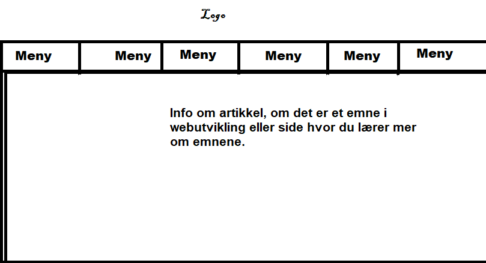
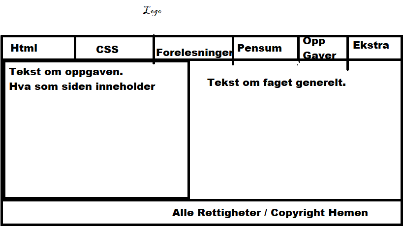

Tanken rundt nettsiden er at den skal handle om webutviklings faget, saker som vi har som html og css, og ressurser for dem. Tanken er at siden skal ha en ordentlig meny, og footer. Og sånne ikoner. Tanken er at forsiden har to bokser, en rød og svart. Og at i resten av artikkel sidene står det tekst. Og ikke så mye til elementer, men passer på å gjøre det oppgaven sier.Bilder av skissene:
 
| Beskrivelse |
Url |
| Er en side for å lære web-teknologi på nettet. Det er innhold om HTML, CSS,JavaScript,Php,AngularJS,SQL,Bootstrap og Jquery |
https://www.w3schools.com/ |
| Boken Webutvikling av Tom Heine Natt, Eva M. Hornnees, og Jostein Nordengen www.it1.no og www.dataservice.net |
En bok i webutvikling hvor du får lært om HTML og CSS, og hvordan en webutvikler utvikler sider. |
| En side om ressurser for html, css, javascript. Mye likt som w3schools. |
https://www.w3resource.com/ |